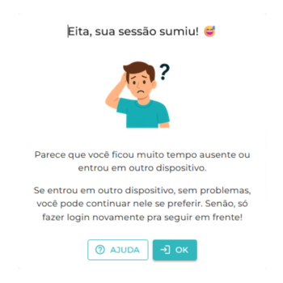

Sintoma: O sistema realiza o logout automático mesmo com apenas uma aba ativa, encerrando a sessão do usuário de forma abrupta.

Causa provável:
- Timeout da sessão por inatividade, mesmo que mínima.
- Erro de autenticação ou falha no token de segurança.
- Instabilidade momentânea no servidor ou perda de sincronização.
- Perda de conexão com a internet ou oscilação no Wi-Fi.
- Acesso simultâneo à mesma conta em outro dispositivo (sobrescrevendo a sessão atual);
Solução:
- Verifique a qualidade da conexão Wi-Fi.
- Evite múltiplas sessões simultâneas com o mesmo login em dispositivos diferentes.
- Refaça o login e, caso o erro continue, entre em contato com o suporte interno com data, hora e nome do usuário afetado.
Dica:Esteja atento às possíveis causas, pois somente a identificação correta do problema permitirá aplicar a solução mais adequada. Caso as falhas persistam, entre em contato com o responsável pelo suporte técnico.
← Voltar para o manual